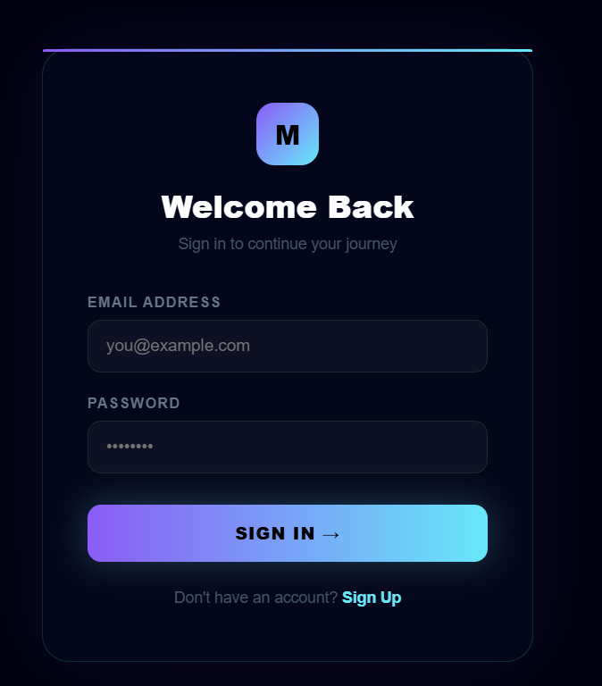
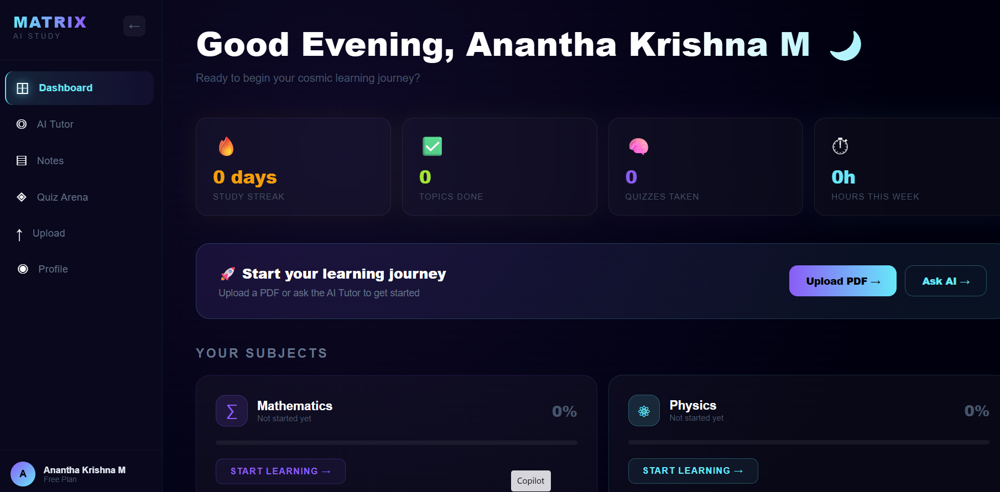
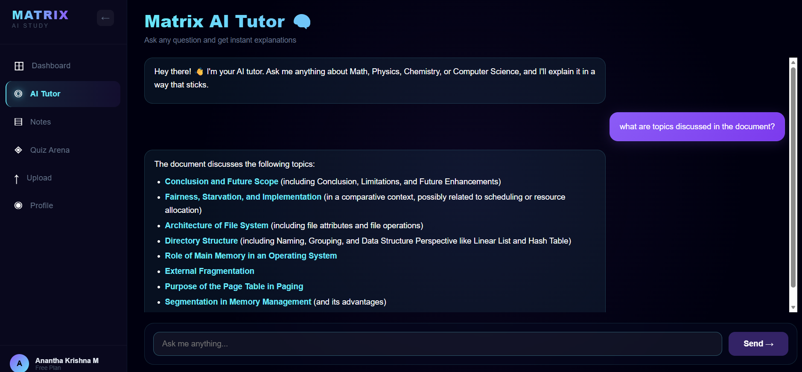

Featured engineering case study
Matrix AI Study App
An AI-assisted learning platform that turns uploaded study materials into interactive study workflows.
Overview
An AI-assisted learning platform that turns uploaded study materials into interactive study workflows. The project is presented with the available implementation details and supplied materials; unverified performance metrics are intentionally omitted.
Key features
- PDF upload and processing.
- context-aware AI tutor.
- smart notes.
- quiz generation and personalized revision workflows..
Technology stack
React · Tailwind CSS · Framer Motion · FastAPI · Python · Gemini API · RAG · Supabase · PostgreSQL
Project gallery







Implementation note: the Bus Booking System uses simulated payment and in-memory booking state in the supplied source; it is not represented as a production payment system. The Smart URL Shortener has no supplied screenshots or repository link, so neither is fabricated.